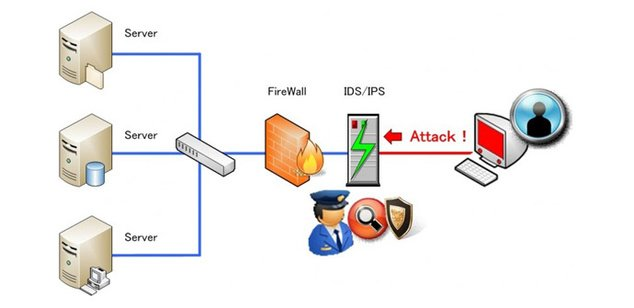

NETWORK IDS
Son muchos los delincuentes que, con ahínco, se esfuerzan en lograr acceder libremente a nuestros sistemas, para obtener algún tipo de beneficio: sea directamente económico –exigiendo un rescate para recuperar nuestra información, como tras un ataque ransomware-, o con la finalidad de espiar a la compañía, para lograr alguna ventaja competitiva. Para luchar contra esas intromisiones, actualmente disponemos de diversos medios.
Los Sistemas de Detección de Intrusos (IDS) aumentan la seguridad de nuestras redes. Este sistema se encarga de vigilar el tráfico, y para ello examina la red y los puertos, analizando paquetes de datos, para detectar patrones sospechosos.

El factor que asegura el éxito de un IDS es su capacidad para identificar firmas ya conocidas. Los IDS contienen una extensa base de datos actualizada, con multitud de firmas de ataque conocidas. La solución IDS se encarga de monitorizar el tráfico entrante -mediante un exhaustivo análisis de red y un barrido de puertos-, y todo ello va comparándolo con la información que dispone sobre elementos maliciosos. Ante cualquier actividad sospechosa, este sistema de detección emite una alerta anticipada, que dirige a los administradores del sistema. Y son estos responsables TI quienes deben tomar las correspondientes medidas.
Estos accesos pueden ser ataques esporádicos realizados por usuarios malintencionados o repetidos cada cierto tiempo, lanzados con herramientas automáticas. Estos sistemas sólo detectan los accesos sospechosos emitiendo alertas anticipatorias de posibles intrusiones, pero no tratan de mitigar la intrusión. Su actuación es reactiva.